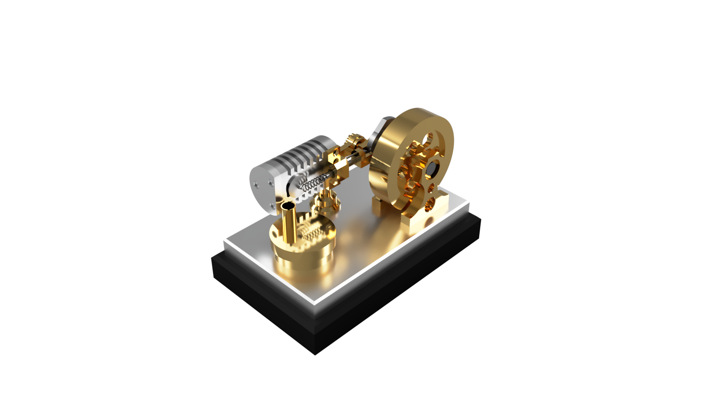
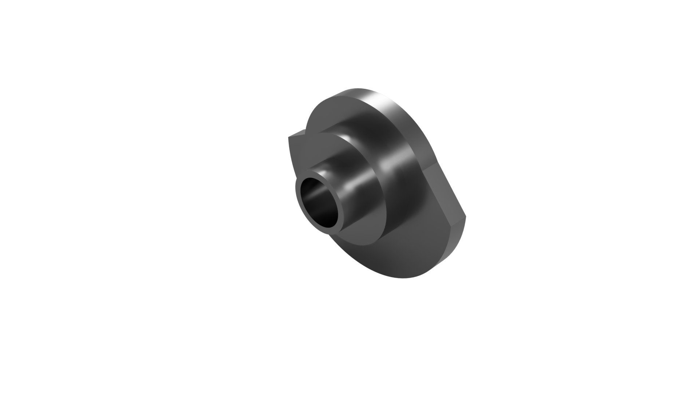
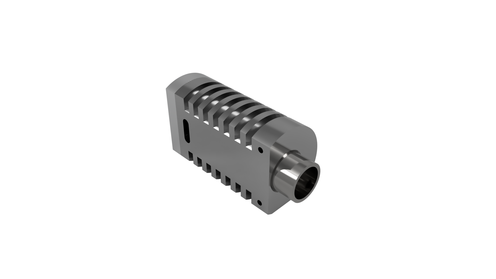
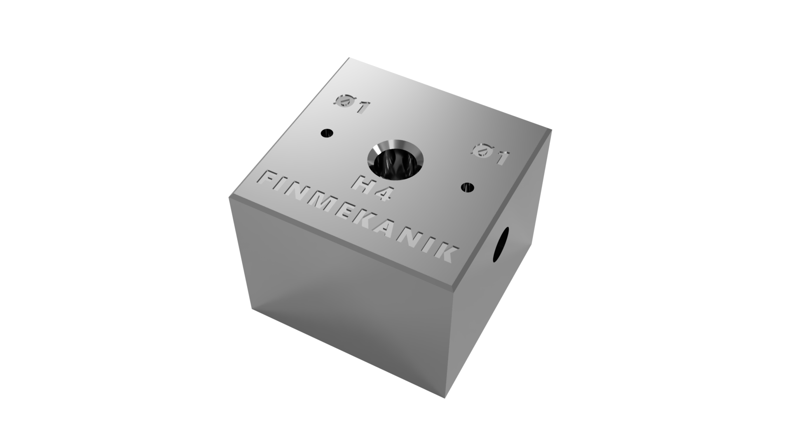

CNC-eksekvering eller manuelt håndværk. Jeg mestrer begge discipliner og afslutter enhver opgave med mikron-præcision som eneste acceptkriterium.
Haas ST10 // Mini Mill // Manual Lathe
Præcisionstolereret vakuummotor udviklet med fokus på termisk balance. Et bevis på fejlfrit samspil mellem komplekse legeringer og snævre tolerancer.


3D-skabelon integration for præcis profilgeometri og ventilstyring.


Udviklet i SS_316 for maksimal geometrisk stabilitet.
Som 32-årig lærling er min modenhed min største tolerance. Jeg ser ikke blot på det færdige emne, men på hele produktionskæden – fra CAM-strategi til endelig QA-verificering.
Datadrevet produktion. Ved at kombinere digital optimering i Fusion 360 med praktisk bearbejdning, reducerer jeg fejlmarginaler og cyklustider. Værktøjsstrategi er fundamentet.
Eksperimentel prototypeudvikling. Jeg søger miljøer, hvor de snævreste tolerancer er standarden, og hvor materialeindsigt er afgørende for succesen.